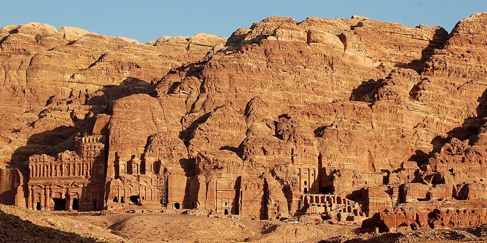
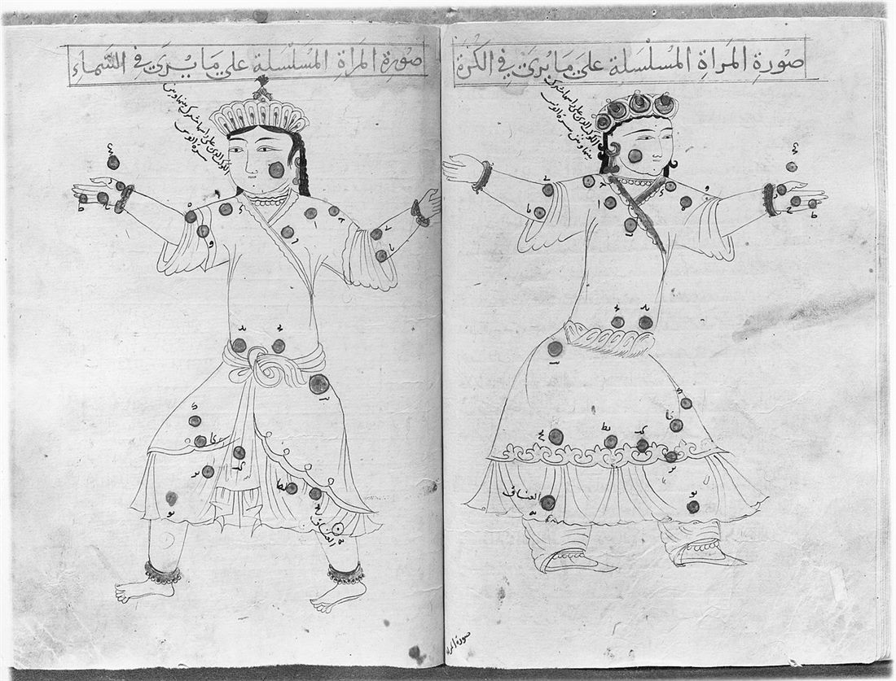
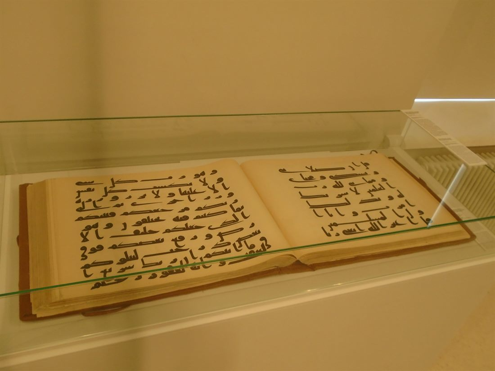
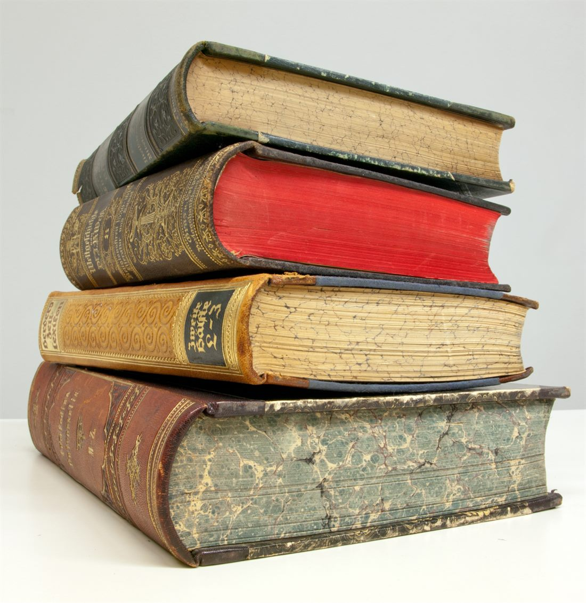
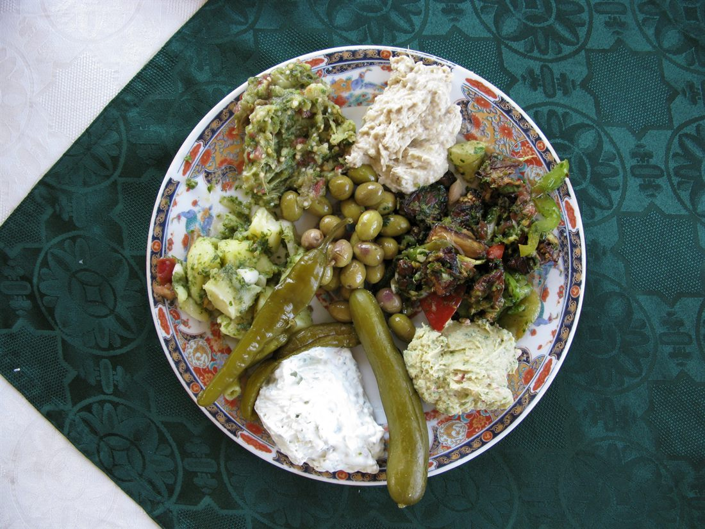
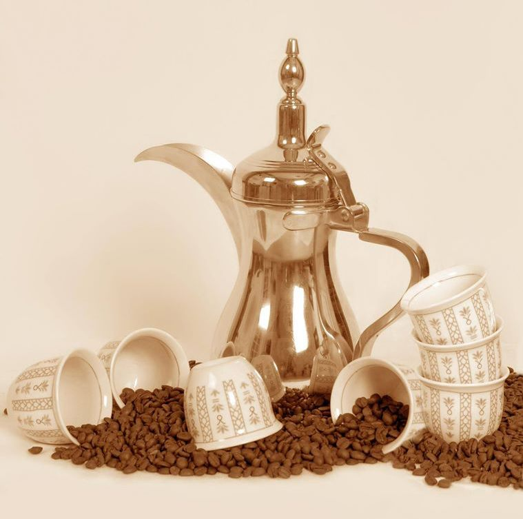
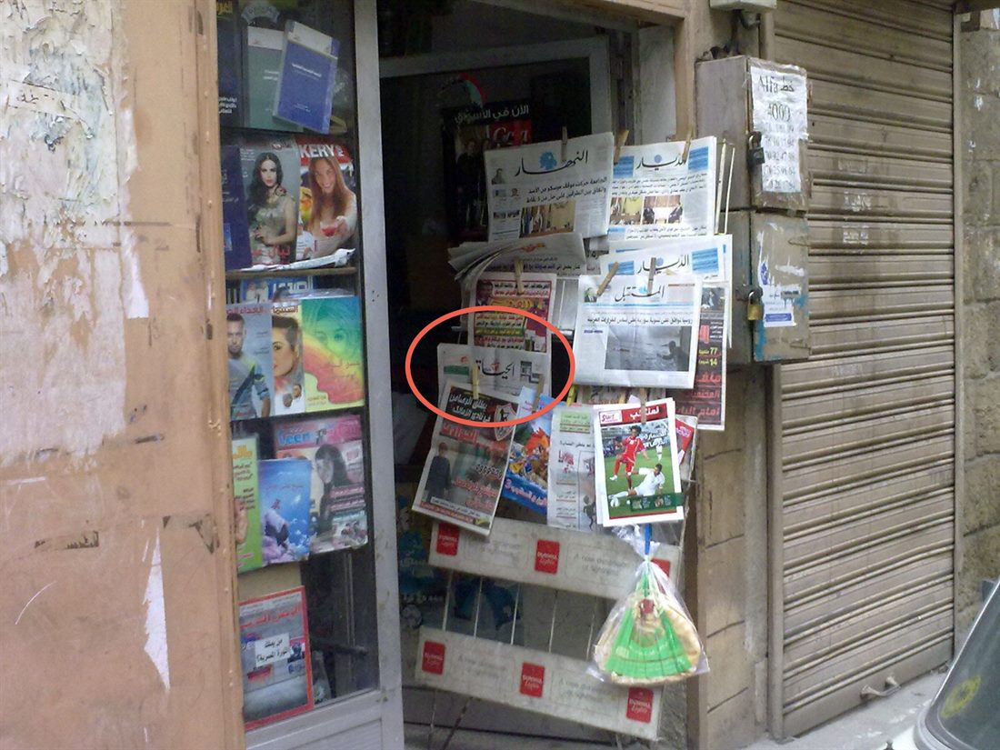

יש שפות שמספרות סיפור, ויש שפות שהן בעצמן הסיפור. הערבית היא מהסוג השני. במהלך כאלף וחמש מאות שנה הספיקה הערבית להיות שפתם של משוררי מדבר, שפה שאיחדה אימפריה שלמה, שפת המדע המתקדם בעולם, השראה לאמנות שלמה, ובסופו של דבר גם השפה שבה מוגש הקפה ומתארחים סביב השולחן. בואו נצא למסע.
שפה שנולדה מן השירה
הערבית היא שפה שמית, בת אותה משפחה כמו העברית והארמית. לכן דובר עברית מגלה בה לא מעט פנים מוכרות: שורשים דומים, צלילים קרובים, ולעיתים גם מילים כמעט זהות. הכתב הערבי עצמו צמח מן הכתב הנבטי, אותו פיתחו הנבטים, אותו עם סוחרים מופלא שבנה את העיר פטרה.

הרבה לפני שהפכה לשפה עולמית, כבר נשאה הערבית יוקרה גדולה, וזאת בזכות השירה. בחצי האי ערב, בתקופה שלפני האסלאם, נדדו משוררים בין השבטים, והשירים הגדולים נחשבו לפסגת הביטוי האנושי. במאה השביעית, עם הופעת הקוראן, התגבשה הערבית הקלאסית לצורתה האחידה, ויחד עם התפשטות האסלאם היא יצאה אל מעבר לחצי האי: אל המזרח התיכון, צפון אפריקה, ואפילו אל ספרד המוסלמית.
תוך פחות ממאה שנה, שפה של שבטי מדבר הפכה לשפת התרבות של חלק גדול מן העולם המוכר.
כשהעולם דיבר מדע בערבית
בין המאה השמינית למאה השלוש עשרה, בעוד אירופה שקועה בימי הביניים, הפכה בגדאד למרכז ידע עולמי. במוסד שנודע בשם בית החוכמה תרגמו חוקרים את אוצרות יוון, פרס והודו, ואז הוסיפו עליהם נדבך משלהם, באסטרונומיה, ברפואה, במתמטיקה ובפילוסופיה. במשך מאות שנים, מי שרצה לקרוא את המדע המתקדם ביותר בעולם, היה חייב לדעת ערבית.

העקבות של אותה תקופה מלווים אותנו עד היום. המילה אלגוריתם נולדה משמו של המתמטיקאי אלח'ואריזמי, והמילה אלגברה הגיעה ישירות משם ספרו, אֵלְגַ׳בְּר (الجَبْر), שפירושו השלמה. וזו רק ההתחלה.
עשרות מילים יומיומיות בעברית ובאנגלית הגיעו במקור מן הערבית: אלכוהול, סוכר, כותנה, לימון, מגזין (מן המילה הערבית למחסנים), וכמובן קפה. בפעם הבאה שתזמינו קפה, אתם כבר אומרים מילה שמקורה בערבית.
כשהאות הופכת לאמנות
בתרבות שבה האמנות נמנעה לרוב מציור דמויות, האות עצמה עלתה אל קדמת הבמה. הקליגרפיה הפכה לאמנות החזותית הנעלה ביותר, מעטרת מסגדים, ספרים וקירות שלמים. מן הכתב הכּוּפי המוקדם והמרובע, ועד לכתבים הזורמים והמעוגלים שבאו אחריו, כל סגנון הוא איזון עדין בין חוקיות כמעט מתמטית לבין חופש אמנותי.

בערבית, לכתוב יפה איננו קישוט בלבד, אלא מסורת בת מאות שנים שעוברת ממורה לתלמיד.
ההיגיון היפה שמאחורי כל מילה
וכאן מתגלה הקסם האמיתי, זה שמפתיע כל מי שמתחיל ללמוד. הערבית בנויה על שורשים. בדרך כלל מדובר בשלושה עיצורים שנושאים יחד משמעות מרכזית, ומהם נולדת משפחה שלמה של מילים קרובות. קחו לדוגמה את שלוש האותיות שמרכיבות את רעיון הכתיבה, ואת המילים שצומחות מהן:

- כַּתַבַּ كَتَبَ פירושו "הוא כתב"
- כִּתַאבּ كِتَاب פירושו ספר
- כַּאתִבּ كَاتِب פירושו כותב או סופר
- מַכְּתַבֶּה مَكْتَبَة פירושו ספרייה
שמתם לב למשהו? ברגע שמזהים את השורש, אפשר כבר לנחש את משמעותן של מילים שמעולם לא פגשנו. זה כמו לקבל מפתח אחד שפותח עשרות דלתות בבת אחת, וזו בדיוק הסיבה שלמידת ערבית היא חוויה כל כך מהנה.
טעמים, ריחות ומנהגים
אי אפשר לספר את סיפורה של שפה בלי לדבר על השולחן שסביבו היא נשמעת. המטבח של העולם הערבי הוא חגיגה של טעמים שכולנו מכירים ואוהבים: חומוס קטיפתי, טבולה רעננה עם פטרוזיליה ולימון, כובה פריכה, חצילים קלויים וצלחות מזה קטנות שממלאות את כל השולחן. כל מנה היא הזמנה לשבת, לטעום ולהישאר.

ובמרכז הכל עומד הקפה. בעולם הערבי הקפה (قَهْوَة, קַהְוֶה) איננו רק משקה, אלא טקס שלם של הכנסת אורחים. הדַלַّה, קנקן הקפה המסורתי, והספלים הקטנים שמוזגים בהם שוב ושוב, הם סמל מובהק של כבוד, נדיבות וחברוּת.

ערבית של היום: שפה אחת, אלף קולות
כיום הערבית היא שפת אם של מעל 400 מיליון אנשים, רשמית בכעשרים וחמש מדינות, ואחת משש השפות הרשמיות של האום. אך יש לה סוד קטן: היא חיה בשתי שכבות.

יש את הערבית הספרותית, פֻצְחַא, האחידה בכל מקום ומשמשת לכתיבה, לחדשות ולספרות. ולצידה חיה הערבית המדוברת, השפה החמה של היומיום, שמתגוונת ומשתנה מאזור לאזור. וזה אולי החלק המשחרר ביותר: כדי לדבר עם אנשים, אין צורך לשלוט בכל ההיסטוריה הזו ולא בכל כללי הדקדוק. צריך פשוט להתחיל לדבר את השפה החיה, בדיוק כמו שילד לומד את שפת אמו.
מסקרן אתכם לדבר את השפה הזו?
ב"שפה בקליק" לומדים ערבית מדוברת בצורה קלה ונעימה, עם תעתיק עברי ובלי אותיות מסובכות. אפשר להתחיל בשיחת ייעוץ קצרה, חינם ובלי שום התחייבות.
לשיחת ייעוץ חינם